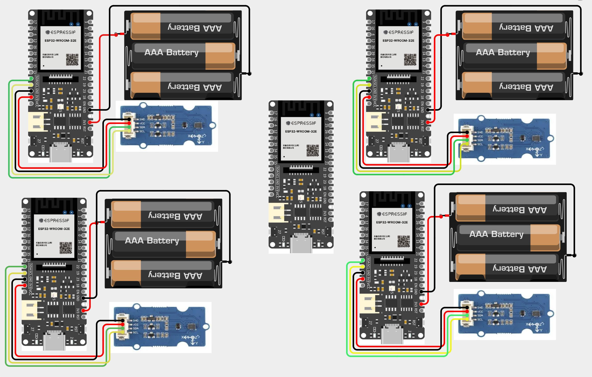
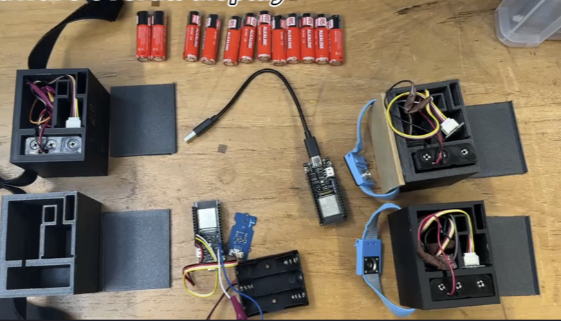

Overview
The development of artificial intelligence (AI) has made it possible to address previously intractable challenges in modern sports competitions. In fencing, points are awarded when a player strikes their opponent with a sabre. However, determining which fencer scores becomes difficult when both land touches simultaneously, as the decision relies on the rule of right of way. These events occur within milliseconds, making it nearly impossible for the human eye to capture the precise moment.
To address this challenge, we designed and implemented an intelligent fencing system capable of accurately determining the right of way. The system collects acceleration data from four joints—the left and right elbows and ankles—using inertial measurement units (IMUs), and transmits this data via an ESP32-based wireless communication network.
We constructed a dataset of 400 motion samples—covering attacks, forward movements, backward movements, and stops—collected from all team members to ensure diversity. The system consists of two main components: a front-end neural network based on Graph Attention Networks combined with 2 bidirectional LSTM layers for motion recognition, and a back-end state machine that determines the correct right of way based on official fencing rules. The front-end network classifies four distinct movements within 10 milliseconds, achieving an average accuracy of 93.4%.
Illustrations
Our team built a wireless communication system based on ESP32:
 Dataset Files
We provide multiple CSV files for different motions and conditions. You can download them below: